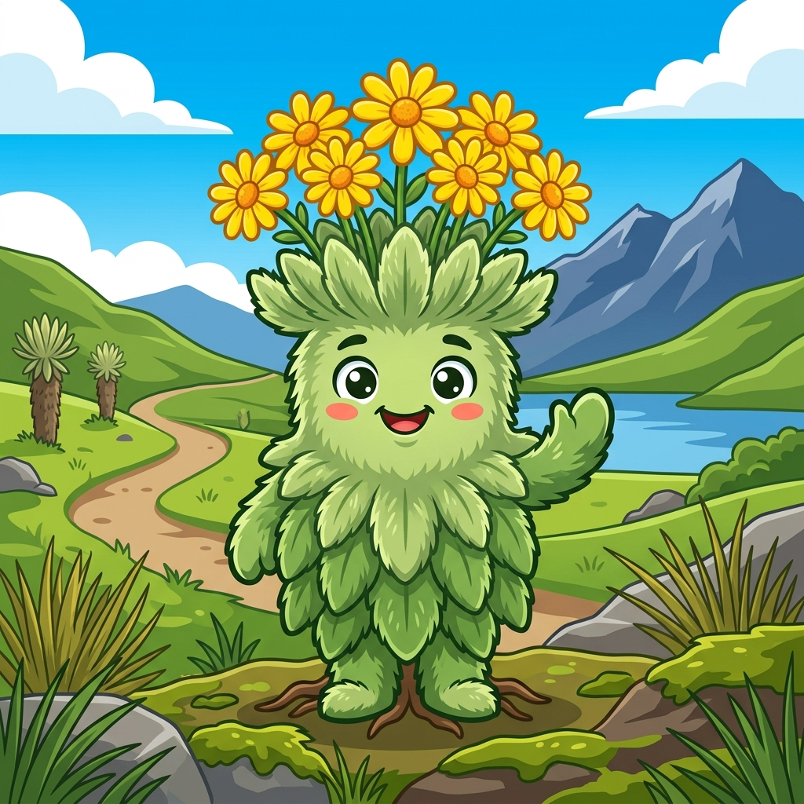
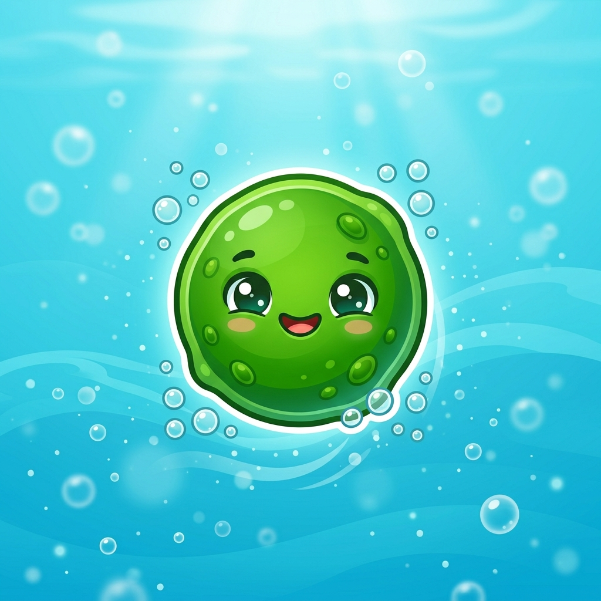
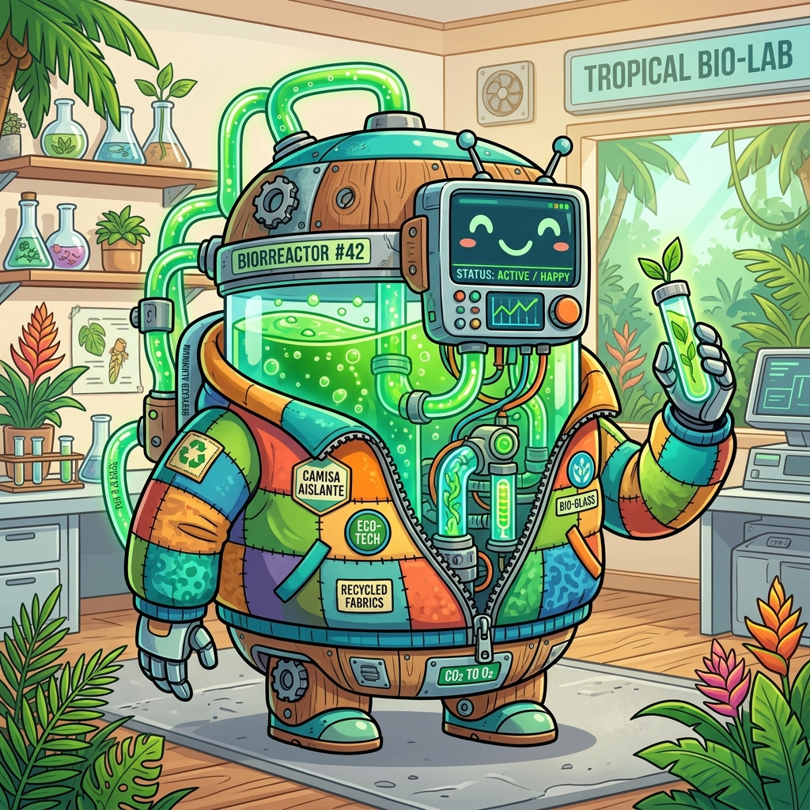
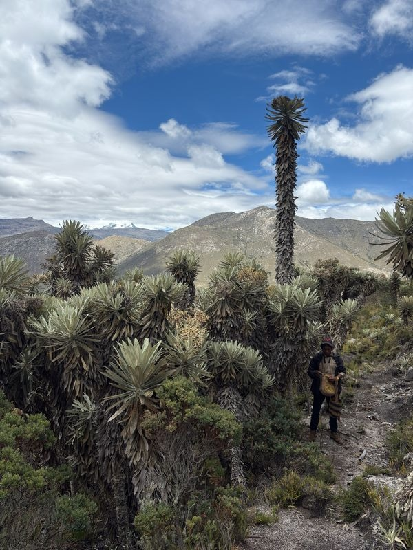
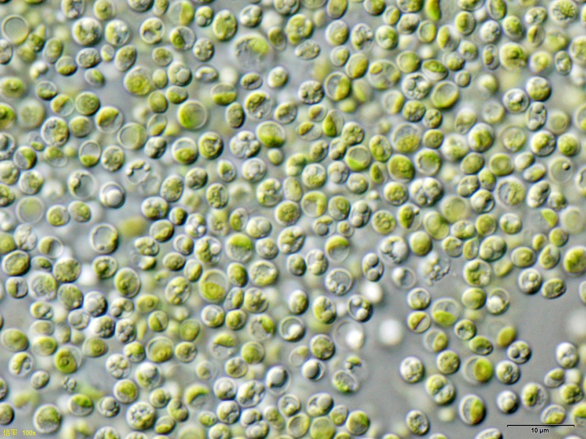
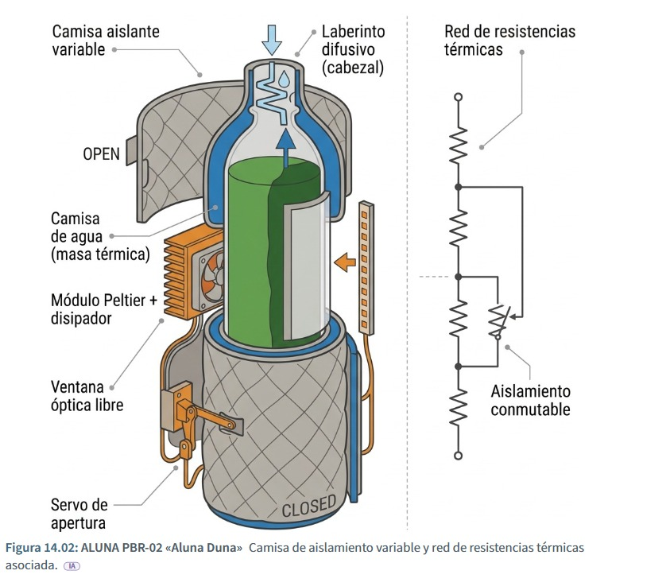

Adaptación de mecanismos térmicos biológicos para la optimización del cultivo de Chlorella vulgaris.

Subsp. glossophylla — Endémico de la Sierra Nevada.
Cierra de noche (frío)
Abre de día (sol)
Cierra de día (sol 38°C)
Abre de noche (fresco)
Invertimos la funcionalidad biológica original: usamos el mecanismo protector contra el calor, no contra el frío.


Máquina de estados que decide el movimiento del servomecanismo:
Decisión autónoma sin intervención humana basada en umbrales de luz y temperatura.
Abrimos el espacio para preguntas.